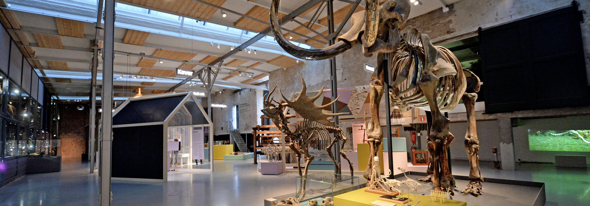

Audiotour algemeen
Deze audiotour neemt je me door het hele museum. We hebben een selectie gamaakt van de meest interessante punten.

Deze audiotour neemt je me door het hele museum. We hebben een selectie gamaakt van de meest interessante punten.